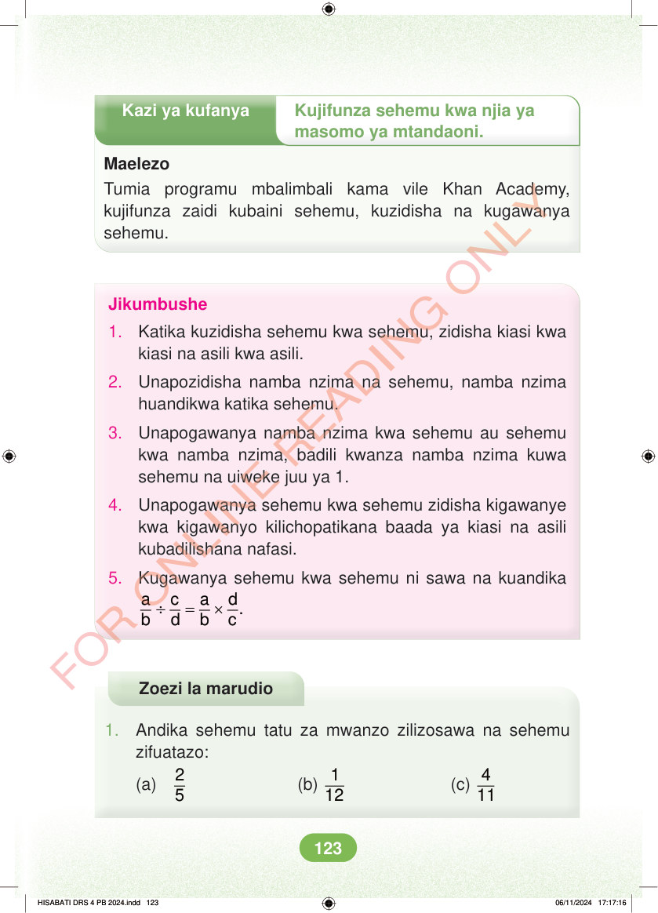

<!DOCTYPE html>
<html lang="sw-TZ"><head><meta charset="utf-8"><meta name="viewport" content="width=device-width,initial-scale=1">
<title>Hisabati: Kitabu cha Mwanafunzi Darasa la Nne</title>
<meta name="title-id" content="pg129_sec001"><meta name="page-section-id" content="135">
<link href="./content/tailwind_output.css" rel="stylesheet"><link href="./assets/libs/fontawesome/css/all.min.css" rel="stylesheet"><link href="./assets/fonts.css" rel="stylesheet">
<style>body{margin:0;background:#eef1ed}main{width:100%;display:flex;justify-content:center;padding:1rem 1rem 5rem;box-sizing:border-box}#content{width:100%;display:flex;justify-content:center}.pdf-page{position:relative;width:min(calc(100vw - 2rem),56rem);aspect-ratio:540.8980102539062/750.6610107421875;background:white;box-shadow:0 4px 24px #0002;overflow:hidden}.pdf-page img{position:absolute;inset:0;width:100%;height:100%;object-fit:fill}</style>
</head><body><main><h1 class="sr-only" id="page-heading">Ukurasa wa 129</h1><div id="content" class="opacity-0"><section role="article" data-section-type="pdf_accessible_page" data-section-id="pg129_sec001" aria-labelledby="page-heading" class="pdf-page"><p class="sr-only" data-id="pg129_gp001_tx001">Kazi ya kufanya Kujifunza sehemu kwa njia ya masomo ya mtandaoni. Maelezo Tumia programu mbalimbali kama vile Khan Academy, kujifunza zaidi kubaini sehemu, kuzidisha na kugawanya sehemu. Jikumbushe 1. Katika kuzidisha sehemu kwa sehemu, zidisha kiasi kwa kiasi na asili kwa asili. 2. Unapozidisha namba nzima na sehemu, namba nzima huandikwa katika sehemu. 3. Unapogawanya namba nzima kwa sehemu au sehemu kwa namba nzima, badili kwanza namba nzima kuwa sehemu na uiweke juu ya 1. 4. Unapogawanya sehemu kwa sehemu zidisha kigawanye kwa kigawanyo kilichopatikana baada ya kiasi na asili kubadilishana nafasi. 5. Kugawanya sehemu kwa sehemu ni sawa na kuandika ÷ = × a c a d. b d b c Zoezi la marudio 1. Andika sehemu tatu za mwanzo zilizosawa na sehemu zifuatazo: (a) 2 5 (b) 1 12 (c) 4 HISABATI DRS 4 PB 2024.indd 123 HISABATI DRS 4 PB 2024.indd 123 06/11/2024 17:17:16 06/11/2024 17:17:16</p></section></div></main><div class="relative z-50" id="interface-container"></div><div class="relative z-50" id="nav-container"></div><script src="./assets/offline-preloader.js?v=audiofix-20260824-1"></script><script src="./assets/scorm.js"></script><script src="./assets/base.bundle.local.js?v=audiofix-20260824-1"></script></body></html>